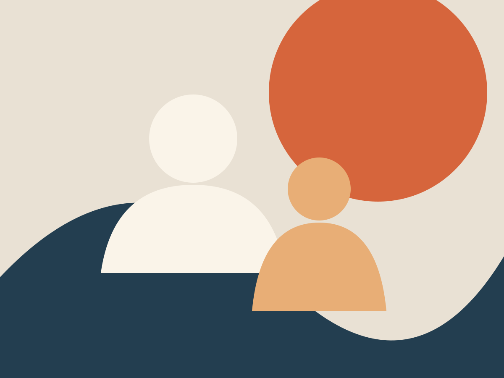

Нужна помощь дома
Повседневные дела, личный уход и практические навыки.
ПодробнееПоддержка NDIS · Сидней
Support Work, Social Work и Support Coordination для участников и семей в Большом Сиднее.
Расскажите, что вам нужно. Во время первого звонка можно задать вопросы без обязательства начинать поддержку.
Вы специалист или сотрудник больницы? Узнайте о направлении →
Пн–пт · 9:00–17:00 · Заказать обратный звонок is a preview only.

Временное фото · выбранный снимок ожидает лицензииНачните с того, что важно вам
Выберите ситуацию, похожую на вашу. По телефону мы обсудим следующий шаг.
Повседневные дела, личный уход и практические навыки.
ПодробнееРазобраться в вариантах и найти услуги.
ПодробнееОбсудить решения, отношения и связи с сообществом.
ПодробнееМы объясним варианты, уважая выбор участника.
ПодробнееОфициальный сайт NDIS объясняет порядок обращения.
Официальная информация NDIS ↗Поговорите с нами о возможном направлении.
ПодробнееНаши услуги
Подходящую услугу, доступность и финансирование мы обсудим до начала поддержки.
Помощь в повседневной жизни дома и вне дома.
Помощь, когда нужно разобраться в сложной ситуации.
Помощь с пониманием плана и подбором услуг.
Простой первый шаг
Для первого разговора документы не нужны.
Мы выслушаем и объясним подходящую услугу.
Обсудим соответствие, доступность и нужную информацию.
Вы выбираете, продолжать ли процесс.
Для кого нужна поддержка, в чём нужен совет и на каком языке вам удобнее общаться. Можно просто задать вопрос.
Другой способ начать
Форма обратного звонка заработает после утверждения правил конфиденциальности и системы приёма заявок.
Будущая форма запросит только основные контакты. Диагноз, номер NDIS и документы не нужны.
Обратный звонок
Это макет формы. Не вводите личные данные: ничего не отправляется и не сохраняется.
Важные вопросы
Скажите, что важно для вас. Мы объясним действующий процесс подбора работников.
Уточните, какие проверки проведены и как рассматриваются обращения. Можно также обратиться в NDIS Commission.
До начала поддержки мы объясним услугу, стоимость и соглашение. Покрытие планом проверяется отдельно.
Язык и культура
Черновик сайта есть на английском, русском и сербском. Вы можете попросить общение на английском, русском, сербском или македонском. Мы отдельно подтвердим доступный вариант.
Выбор языка не гарантирует, что сотрудник или переводчик доступен немедленно.
Семьям и опекунам
Мы обсудим варианты. Если участник хочет вашего участия, мы вместе поговорим о том, что важно ему.
Информация для семейСпециалистам
Позвоните и расскажите в общих чертах, какая поддержка нужна. Не отправляйте чувствительные данные через этот макет.
Путь для направляющихМы обсудим вашу ситуацию. Финансирование конкретной услуги нужно проверить по плану.
Официальный сайт NDIS объясняет подачу заявления. Вы можете позвонить нам с общим вопросом.
Стоимость зависит от услуги и условий соглашения. Мы объясним её до начала.
Это нужно подтвердить. Позвоните и расскажите, как управляется ваш план.
Доступность меняется. Мы обсудим реальный следующий шаг по телефону.
Расскажите, что вам важно. Мы объясним действующий процесс подбора и изменений.
Пока не можем обещать этого в макете. Уточните возможные варианты по телефону.
Попросите подтвердить проверки для конкретной услуги и работника до начала поддержки.
Можно попросить английский, русский, сербский или македонский. Доступность подтвердим отдельно.
Текущая география сайта — Большой Сидней. Уточните ваш район и услугу по телефону.
Мы объясним действующие правила отмены и замены до начала услуги.
Мы объясним условия соглашения, включая сроки уведомления, до вашего решения.
Можно связаться с нами или с NDIS Quality and Safeguards Commission.
Social Work помогает с личными и социальными вопросами. Support Coordination помогает использовать план и найти услуги.
Да, начать разговор можно. Перед обменом подробностями обсудим желания и согласие участника.
ICAPACITY · Сидней
Проще всего начать с разговора. Позвоните в рабочее время; обратный звонок подключим после проверки формы.
Позвонить 0450 874 305Пн–пт · 9:00–17:00